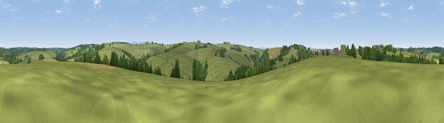

Viewpoint near Ashwater
#38970 in England · top 90% of its area beats it · near Ashwater · access?Where it is
The exact computed spot (SX 39575 95825). Click the marker for map links.
Public access: no public right of way or access land is recorded at this exact spot — it may be on private land. Computed from Natural England's CRoW access layer and OpenStreetMap rights of way — not the legal definitive map. Always verify locally.
The view, rendered

A 360° render of this exact spot computed from the terrain model, tree cover and land cover — summer colours, afternoon light, calibrated against photographs of famous viewpoints. Real trees, hedges and buildings will differ in detail.
The panorama
Grey silhouette: terrain skyline in each direction (720 bearings, Earth curvature and refraction included). Dashed green: skyline with trees (+15 m) and buildings (+8 m) as obstacles. Blue strip: how far the ground is visible on each bearing.
Where the view opens
Wedge length = distance to the farthest visible ground on that bearing (vegetation-aware). Rings at 10, 25 and 50 km.
What fills the view
80% grassland · 14% woodland · 6% cropland ·
Angular shares of the visible panorama (visual magnitude), not map area. Landscape diversity 0.29 (0–1 Shannon).
Key numbers
More beautiful places nearby
The staircase of upgrades: each row has a higher view potential than everything closer. Driving times are estimates from straight-line distance, calibrated against real road routing — check an actual route before setting out.
| Place | Direction | Drive | Score |
|---|---|---|---|
| Viewpoint near Virginstow | SW · 3 km | ~8 min | 42.6 |
| Viewpoint near Chapmans Well | W · 4 km | ~9 min | 43.6 |
| Viewpoint near Germansweek | SE · 5 km | ~10 min | 51.9 |
| Viewpoint near Chapmans Well | SW · 5 km | ~11 min | 57.4 |
| Viewpoint near Hollacombe | N · 8 km | ~16 min | 60.3 |
| Viewpoint near Bratton Clovelly | E · 9 km | ~18 min | 60.9 |
| Viewpoint near Tinhay | S · 12 km | ~23 min | 61.3 |
| Viewpoint near Whitstone | WNW · 14 km | ~25 min | 65.1 |
50.73982, -4.27497 · source: screening · position refined by local search. Computed location — check access rights before visiting.